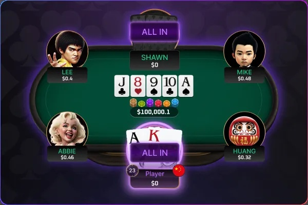
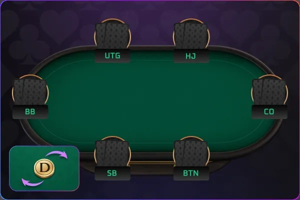
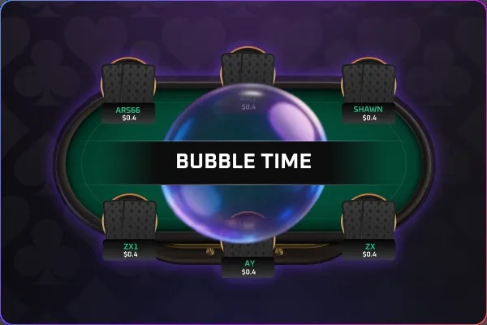
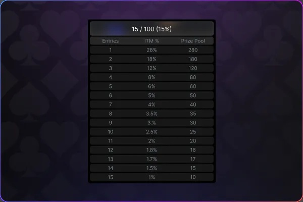
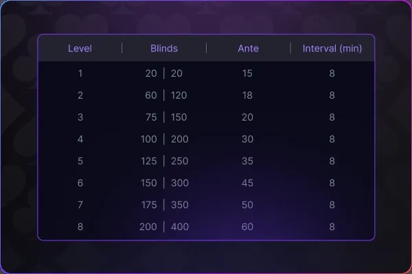
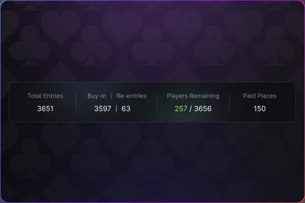

首頁 / 錦標賽總覽
錦標賽總覽
參加精彩錦標賽，挑戰高額獎勵與榮耀排名。
UnlockBig Wins
常規賽
採固定買入制度,獎池隨實際參賽人數累積,強調策略、耐心與臨場判斷,是磨練技術、累積實戰經驗的理想賽事
免費賽
無需報名費即可參賽,讓玩家零風險體驗錦標賽節奏,熟悉比賽結構,並有機會贏取真實獎勵,是新手入門與休閒玩家的最佳選擇
保底賽
設有明確保證獎池,即使參賽人數未達預期,獎金仍照保底金額發放,提供高性價比與更高回報潛力,深受競技型玩家青睞
獵人賽
採動態賞金制度,淘汰對手可獲50%賞金,剩餘50%累積至自身,鼓勵積極進攻與高波動對決,適合喜愛快節奏的玩家
衛星賽
以低買入競逐高價值門票，採階梯或直升晉級機制, 讓玩家以小博大進入大型賽事，是資金控管與挑戰高額賽事者的最佳跳板
2
基本規則

德州撲克，是一種比牌型大小、不比花色的撲克遊戲。
加入籌碼、位置、翻牌規則的元素，和錦標賽才有的大盲級別、泡泡時間、錢圈。
基本遊戲步驟為：
翻牌前下注 → 翻牌後下注 → 轉牌下注 → 河牌下注 → 比牌型大小。
3
位置介紹（以6人桌為例）

每位玩家在桌上的位置會影響出牌順序與策略，以下是順時針的標準座位名稱：
• 小盲位 (SB): 莊家左邊第一位，需強制下注小盲注。翻牌後第一個行動，位置不利。
• 大盲位 (BB): 小盲左邊，強制下注大盲注。翻牌前最後行動，偶爾可免費看翻牌。
• 槍口位 (UTG): BB左邊第一位，也是6人桌的早期位置，翻牌前第一個行動，須保守出牌。
• HighJack (HJ): UTG左邊，屬於中間位置，可適度擴張起手範圍。
• CutOff (CO): BU前一位，屬於後位，有很強的進攻與偷盲潛力。
• Button (BU / BTN): 每局發牌者，翻牌後最後行動，資訊最完整，是最有利的位置。
每一局中玩家都有固定位置，牌局進行時不可隨意更換；每手牌結束後，位置會順時鐘（往左）輪替； 現場通常會使用莊碼（BU）標示莊位，每手牌後莊碼順時鐘交給下一位玩家，玩家無需實際換座位。
4
錦標賽事流程
1. 每位玩家買入後，獲得相同數量的起始籌碼。
2. 盲注級別隨時間遞增。
3. 籌碼耗盡的玩家被淘汰。
4. 最後留存的玩家獲得冠軍。
5
泡泡時間

泡泡時間（Bubble Time）: 則是指剩餘玩家要進入錢圈的時刻。
例如：如果錢圈是前10名，那麼當場上剩下11到12名玩家時，就是泡泡時間。
錦標賽中，通常僅有約 10～25% 的玩家能進入錢圈，其餘將被淘汰。錢圈人數比例依獎金結構而定，在泡泡階段，玩家因是否能獲得獎金而採取更謹慎或更激進的策略。
6
錢圈

錢圈（In The Money）: 在錦標賽中，能夠獲得獎金的名次，通常為前10~25%。
例如：如果一場比賽有100名玩家，錢圈比例設為10%，則只有前10名可以得到獎金，這10個名次就被稱為錢圈。
7
盲注

盲注會依照升盲時間逐步提高，藉此加快賽程並提升比賽的節奏與遊戲性。
1. 盲注級別（Level）: 每個階段的大小盲金額，例如：100/200。
2. 升盲時間（Level Time）: 每個盲注級別持續的時間，例如：每 30 分鐘升盲一次。（各賽事盲注結構不同，請依賽事規則或圖表為準）
3. 大盲前注（BB Ante）: 大盲玩家需在下大盲時，額外支付等同於大盲的前注。
4. 例如：100/200/200，最後的 200 為前注，表示大盲需下注 200＋200。
8
重複購入

若賽事允許，玩家被淘汰後可在指定時間內再次購入籌碼。